السلسلة 63
السيارة (صنف B) · 40 سؤال بالصوت. حاول تجاوب بوحدك، من بعد شوف الجواب.
السؤال 1
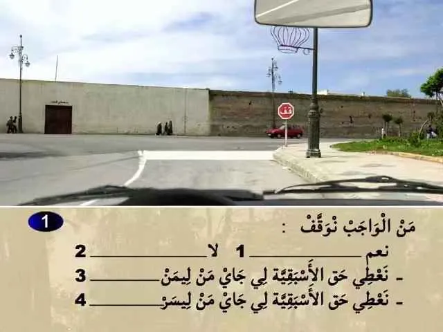
بيّن الجواب
الجواب الصحيح: 1 و 3 و 4
العلامة الطرقية كتطلب الوقوف الإجباري، وخاصني نعطي الأسبقية للطوموبيلات الجاية من اليمين ومن اليسار.
السؤال 2
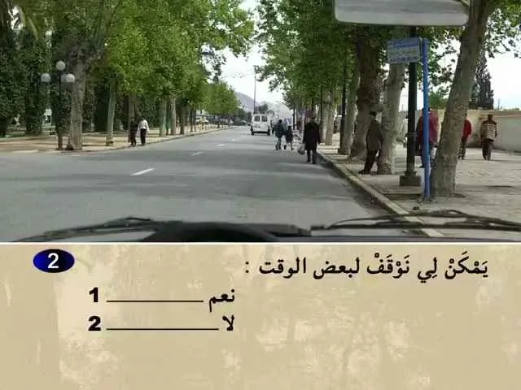
بيّن الجواب
الجواب الصحيح: 2
الإشارة كتبيّن أن المكان خاص بالحافلات ومايمكنش نوقف ولا نحبس.
السؤال 3
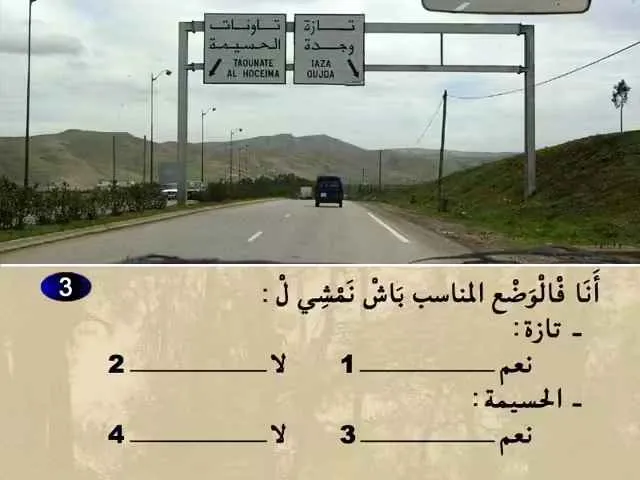
بيّن الجواب
الجواب الصحيح: 1 و 4
الطريق اللي أنا فيه غادي تازة ووجدة، والطريق الآخر غادي تاونات والحسيمة، يعني أنا في الطريق اللي غادي تازة ماشي الحسيمة.
السؤال 4
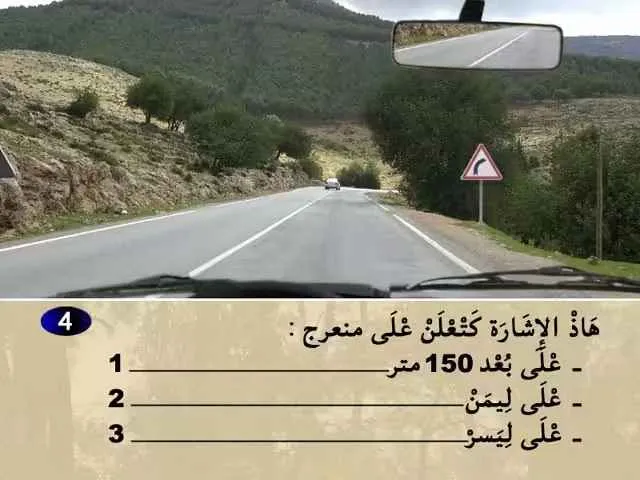
بيّن الجواب
الجواب الصحيح: 1 و 2
الإشارة الطرقية كتبيّن الخطر، وبرا المدينة الخطر كيكون على بعد 150 متر، والخطر اللي في اللافتة هو منعرج لليمين.
السؤال 5
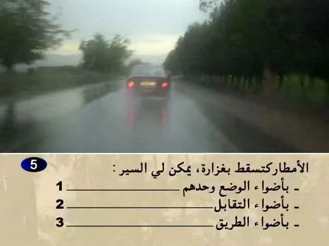
بيّن الجواب
الجواب الصحيح: 2
فاش كطيح الشتا، خاص نسوق بالأضواء ديال التقابل وأضواء الضباب القدامية ونزيد مسافة الأمان. فالاختيارات كاينة غير أضواء التقابل، إذن نختار أضواء التقابل.
السؤال 6
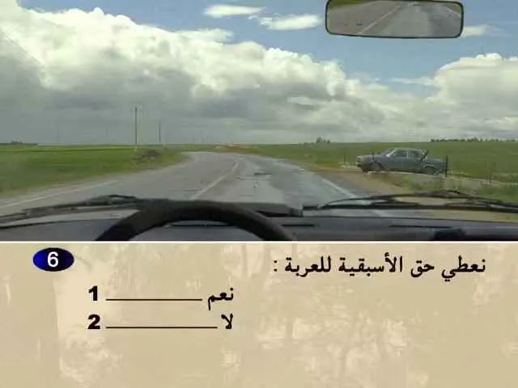
بيّن الجواب
الجواب الصحيح: 2
العربة موجودة في طريق ثانوية وما كنعطيوش فيها الأسبقية للعربات الجاية من اليمين حيت أنا في طريق رئيسية، إذن ما نعطيش الأسبقية.
السؤال 7
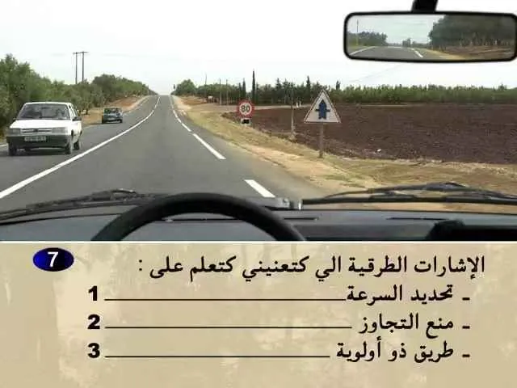
بيّن الجواب
الجواب الصحيح: 2 و 3
الإشارات الطرقية مرسومة على الأرض كتسمى الإشارات الأفقية وكاينة إشارات عمودية على جنب الطريق. في هاد الحالة عندنا خط متصل يعني ممنوع علينا التجاوز، وعلامة طريق ذات أولوية. (وعلامة تحديد السرعة خاصة بالشاحنات وتحتها علامة تكميلية).
السؤال 8
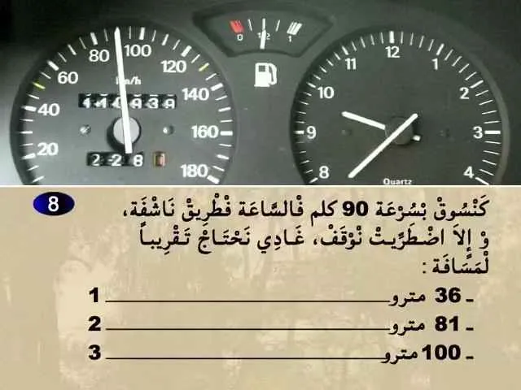
بيّن الجواب
الجواب الصحيح: 2
طريق ناشفة يعني طريق عادية، المسافة اللي نحتاجها للوقوف هي: 9 في 9 تساوي 81.
السؤال 9
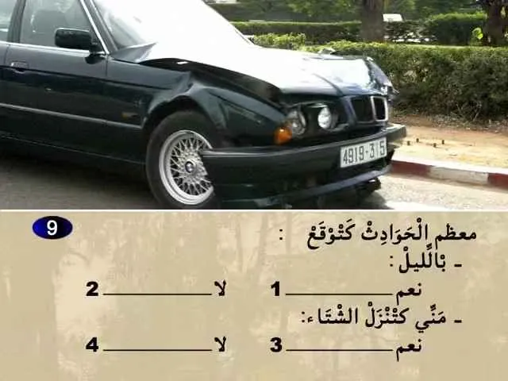
بيّن الجواب
الجواب الصحيح: 2 و 4
الحوادث ما كايوقعوش فالليل حيت السائق كيركز بزاف، ونفس الشيء فاش كطيح الشتا.
السؤال 10
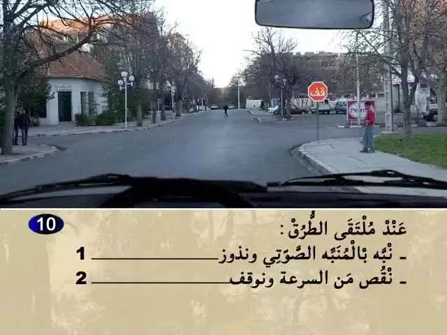
بيّن الجواب
الجواب الصحيح: 2
العلامة الطرقية كتطلب الوقوف الإجباري، يعني نخفض السرعة ونوقف.
السؤال 11
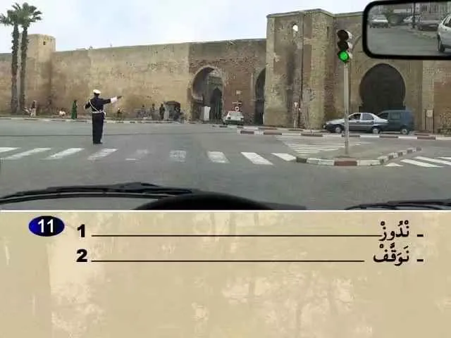
بيّن الجواب
الجواب الصحيح: 2
فاش يكون شرطي المرور، كتلغى جميع الإشارات المرورية، خاص نوقف ونتسنى إشارته.
السؤال 12
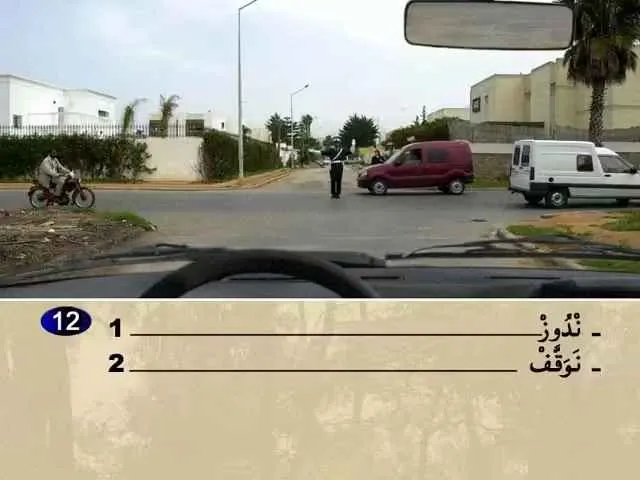
بيّن الجواب
الجواب الصحيح: 2
فاش يكون شرطي المرور، كتلغى جميع الإشارات المرورية، وحركة الشرطي كتعني الوقوف.
السؤال 13
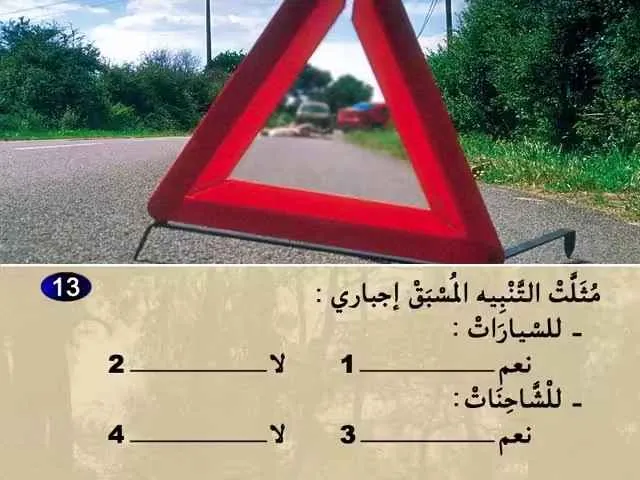
بيّن الجواب
الجواب الصحيح: 1 و 3
مثلث التّنبيه المسبق إجباري للطوموبيلات وللشاحنات.
السؤال 14
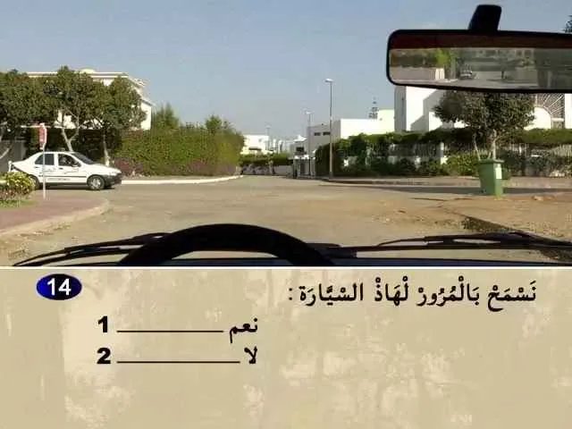
بيّن الجواب
الجواب الصحيح: 1
فاش تكون سيارات الشرطة فمهمة، خاص نعطيهم الأسبقية.
السؤال 15
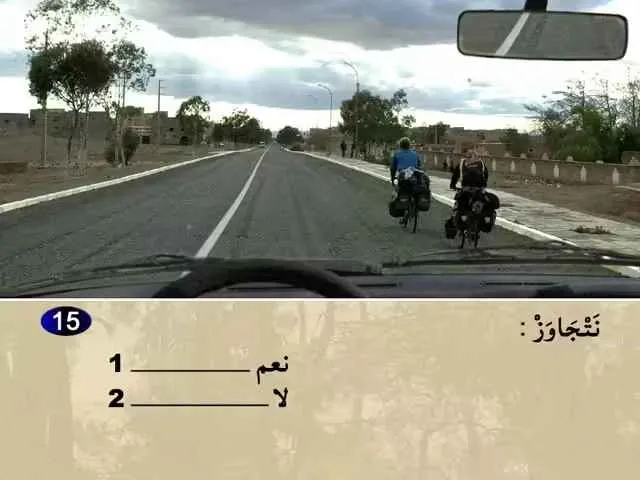
بيّن الجواب
الجواب الصحيح: 2
الإشارة الطرقية الأفقية الخط المتّصل يمنعني من التجاوز، إذن مايمكنش نتجاوز.
السؤال 16
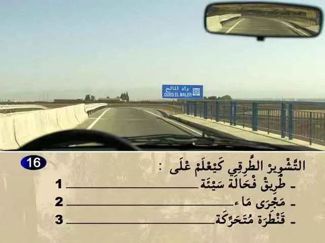
بيّن الجواب
الجواب الصحيح: 2
التشوير الطرقي كيعلن على وجود مجرى ماء فقط.
السؤال 17
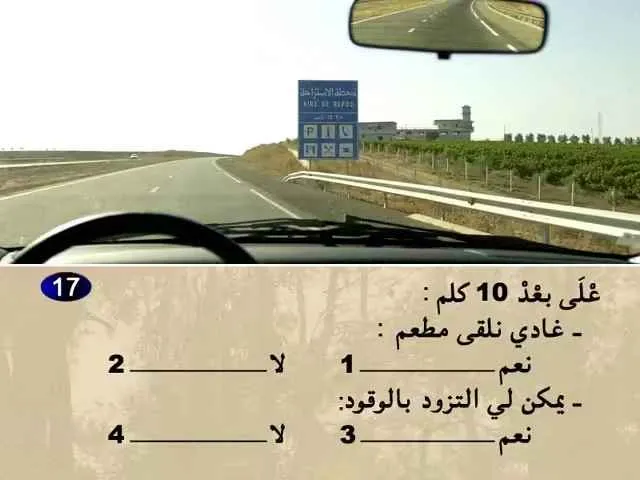
بيّن الجواب
الجواب الصحيح: 1 و 3
اللافتة الطرقية كتعلّم على وجود محطة إستراحة على بعد 10 كيلومترات، كتحتوي على مطعم ومحطة وقود وخدمات أخرى.
السؤال 18
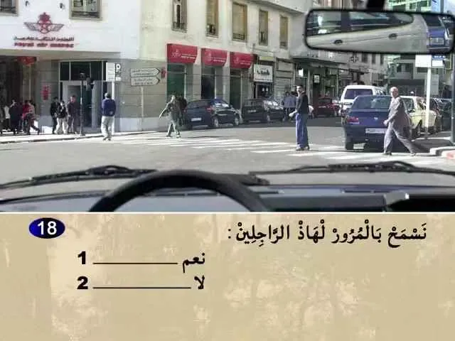
بيّن الجواب
الجواب الصحيح: 1
الراجلين في ممرهم، خاصنا نسمحو ليهم بالمرور.
السؤال 19
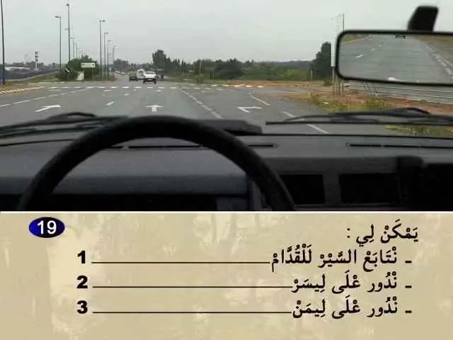
بيّن الجواب
الجواب الصحيح: 1
التشوير الأفقي، الأسهم المرسومة على الأرض كتجبرنا على اتجاه محدد، والطريق اللي أنا فيه كيجبرني نسير مباشرة.
السؤال 20
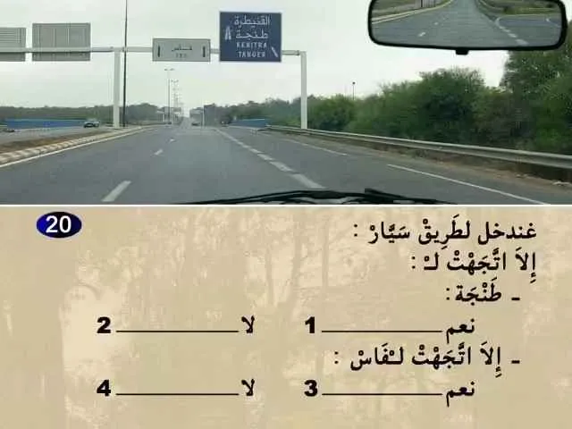
بيّن الجواب
الجواب الصحيح: 1 و 4
العلامة الطرقية الزرقاء كتبيّن الطريق السيّار ومكتوب فيها القنيطرة وطنجة، للدخول للطريق السيّار خاصني نتجه لطنجة، واللافتة البيضاء اللي مكتوب فيها فاس كتبيّن طريق وطنية ماشي سيّار.
السؤال 21
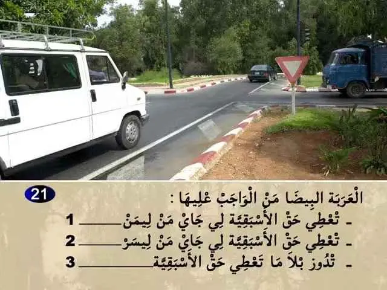
بيّن الجواب
الجواب الصحيح: 1 و 2
العربة البيضاء عندها إشارة طرقية تقول ما عندهاش حق الأسبقية، إذن خاصها تعطي الأسبقية للعربات الجاية من اليمين واليسار.
السؤال 22
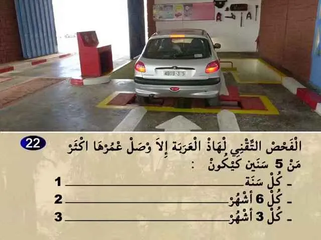
بيّن الجواب
الجواب الصحيح: 1
العربات اللي عندها 5 سنين وأكثر، الفحص التقني يكون كل عام.
السؤال 23
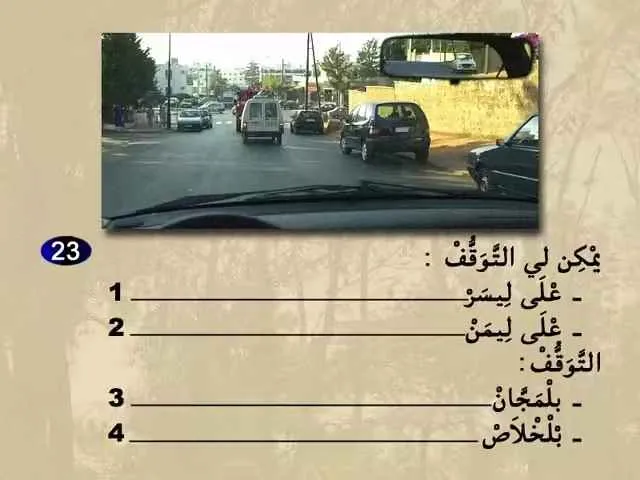
بيّن الجواب
الجواب الصحيح: 2 و 3
فاش تكون الطريق ذات اتجاهين، نتوقف على الجهة اليمنى فقط، والتوقف مجاني حيت ما كايناش علامة ديال التوقف المدفوع.
السؤال 24
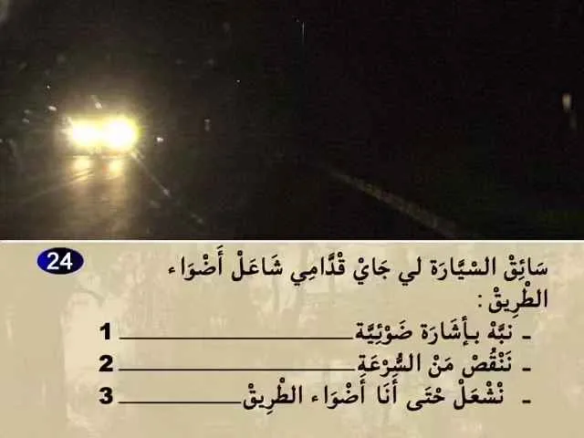
بيّن الجواب
الجواب الصحيح: 1 و 2
في هاد الحالة، كننبهو بإشارة ضوئية وننقص من السرعة.
السؤال 25
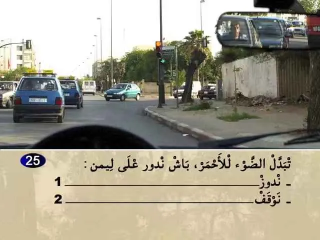
بيّن الجواب
الجواب الصحيح: 1
الإشارة الضوية الحمراء خاصة بالعربات اللي بغات تكمل الطريق مباشرة، وكاينة إشارة ضوية خضراء (سهم أخضر لليمين) للسيارات اللي بغات تنعطف لليمين، إذن يمكنني المرور والانعطاف لليمين.
السؤال 26
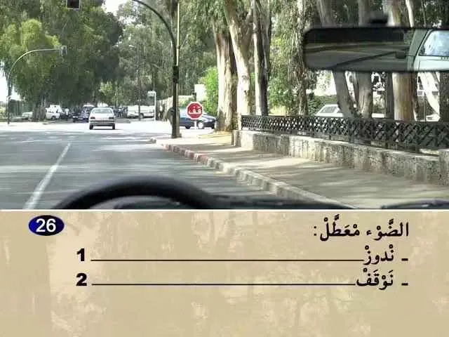
بيّن الجواب
الجواب الصحيح: 2
الإشارة الضوية ما خداماش، ولكن كاينة علامة قف، إذن خاصني نوقف.
السؤال 27
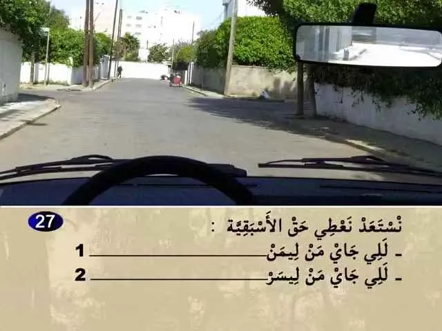
بيّن الجواب
الجواب الصحيح: 1
في ملتقى الطرق، القاعدة كتقول نعطي الأسبقية للعربات الجاية من اليمين فقط.
السؤال 28
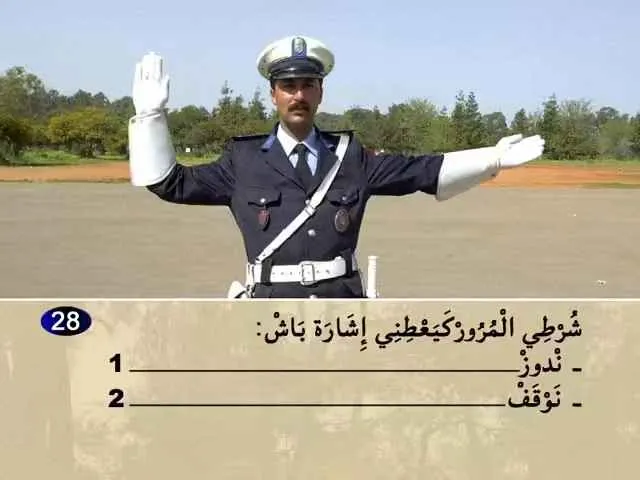
بيّن الجواب
الجواب الصحيح: 2
حركة شرطي المرور في هاد الحالة كتبيّن أنه كيطلب الوقوف.
السؤال 29
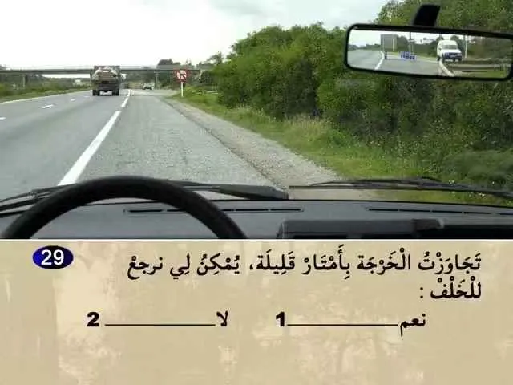
بيّن الجواب
الجواب الصحيح: 2
فاش نكونو في طريق سيّار ذات اتجاه واحد، ممنوع نديرو نصف دورة للرجوع للخلف، الطريق خاصنا نسيرو فيه مباشرة فقط.
السؤال 30
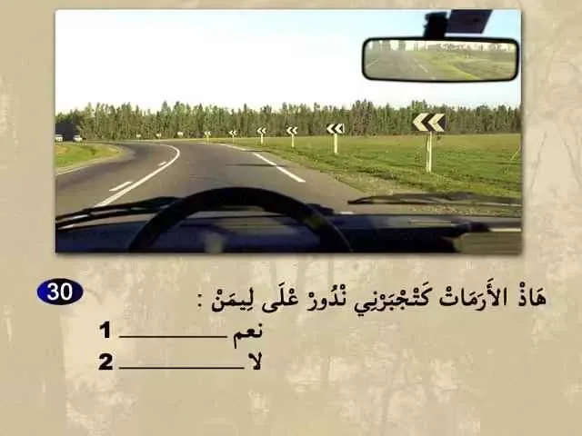
بيّن الجواب
الجواب الصحيح: 2
الارمات كتعلمني ان الطريق فيها منعرج و مكتعنيش الاجبار.
السؤال 31
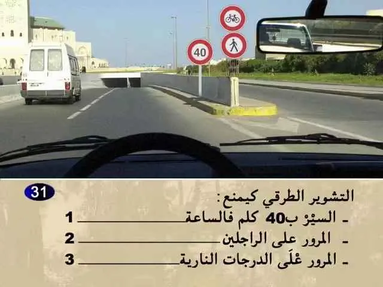
بيّن الجواب
الجواب الصحيح: 2 و 3
العلامات الطرقية كتبيّن: منع مرور الدراجات، منع مرور الراجلين، وممنوع تجاوز سرعة 40 كلم في الساعة، إذن الإجابة الصحيحة هي 2 و 3.
السؤال 32
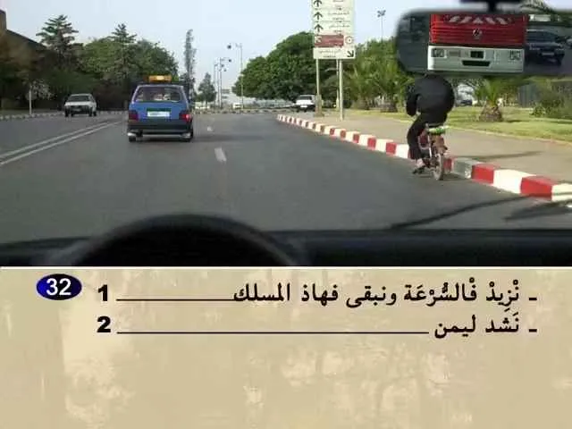
بيّن الجواب
الجواب الصحيح: 2
المسلك العادي هو اللي على الجهة اليمنى، خاصنا نسير في المسلك الموجود على اليمين.
السؤال 33
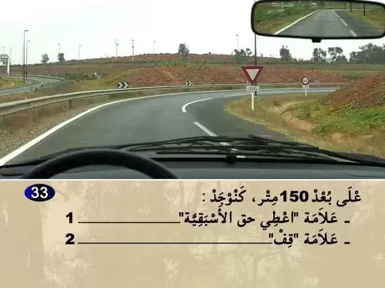
بيّن الجواب
الجواب الصحيح: 1
علامة الخطر على بعد 150 متر كتبيّن علامة ما عندكمش حق الأسبقية.
السؤال 34
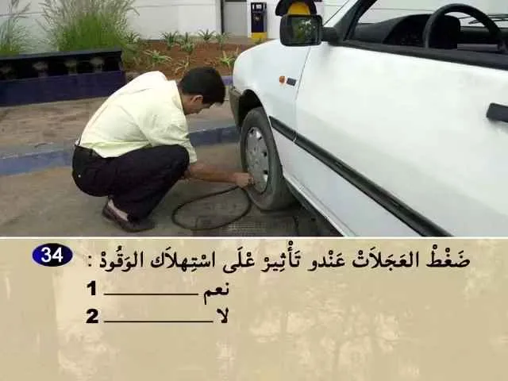
بيّن الجواب
الجواب الصحيح: 1
ضغط العجلات عنده تأثير على استهلاك الوقود.
السؤال 35
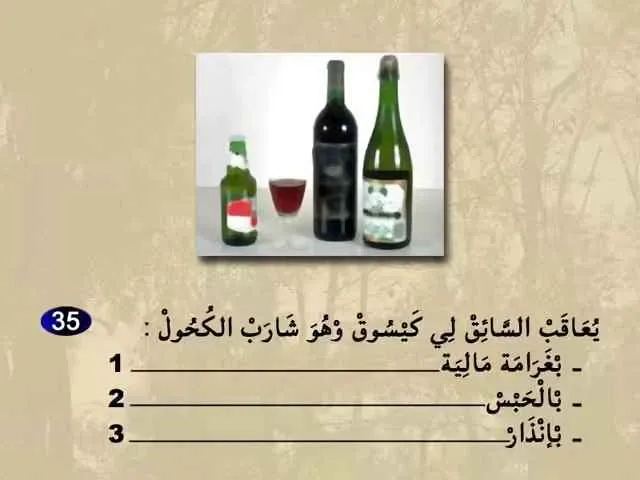
بيّن الجواب
الجواب الصحيح: 1 و 2
السائق اللي يسوق تحت تأثير الكحول كيتعاقب بغرامة مالية والسجن.
السؤال 36
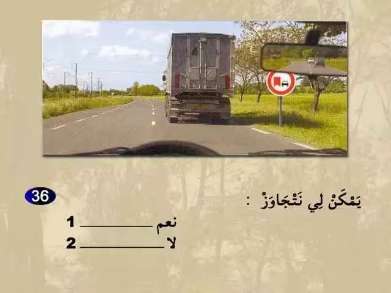
بيّن الجواب
الجواب الصحيح: 1
العلامة الطرقية ما كاتمنعش التجاوز للطوموبيلات، ولكن كتمنع التجاوز للشاحنات، والخط المتقطع يسمح بالتجاوز.
السؤال 37
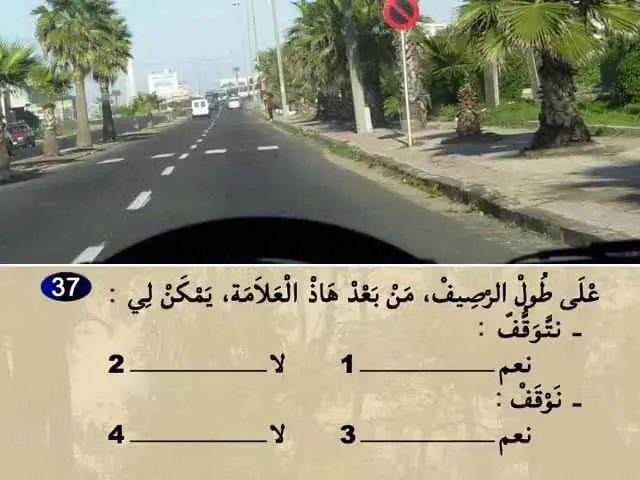
بيّن الجواب
الجواب الصحيح: 2 و 3
العلامة كتمنع التوقف وتسمح بالوقوف، إذن في هاد الحالة ممنوع التوقف على طول الرصيف، ويمكن الوقوف على طول الرصيف.
السؤال 38
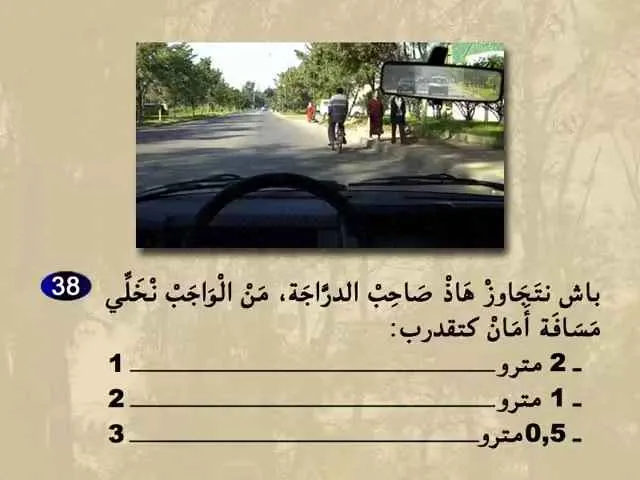
بيّن الجواب
الجواب الصحيح: 2
لتجاوز سائق الدراجة داخل المدينة، خاص نخلي مسافة ديال متر واحد. (خارج المدينة متر ونصف).
السؤال 39
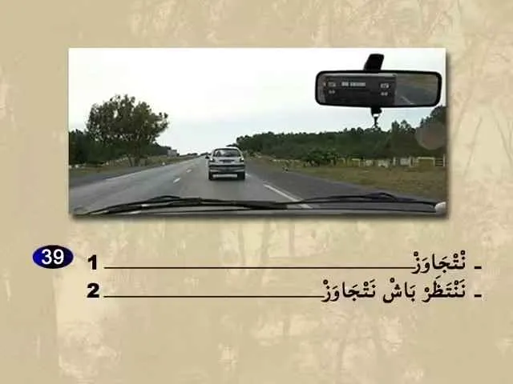
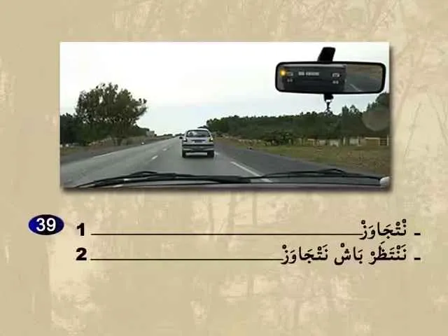
بيّن الجواب
الجواب الصحيح: 2
التشوير الأفقي الخط متقطع كيسمح لي بالتجاوز وما كاينة سيارة في الاتجاه المقابل، ولكن ما يمكنش نتجاوز حيت كاينة عربة من الخلف كتحضر للتجاوز، إذن خاصني نتسنى ونتجاوز.
السؤال 40
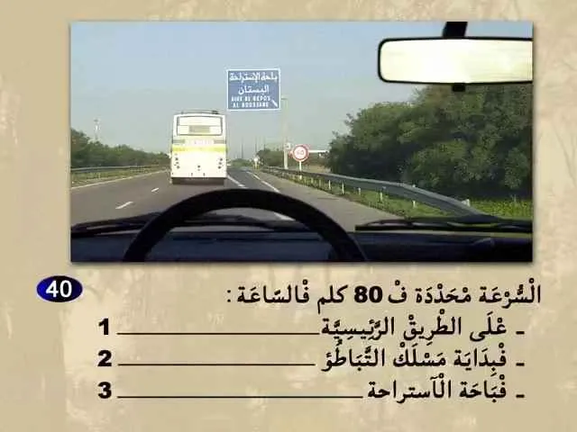
بيّن الجواب
الجواب الصحيح: 2
كاينة باحة إستراحة، والإشارة الطرقية اللي كتشير للسير ب 80 كلم في الساعة خاصة بالعربات اللي بغات تخرج من المسلك الرئيسي وتستعمل مسلك التباطئ، ماشي للعربات اللي كتمشي في الطريق الرئيسية، إذن السرعة محددة في 80 كلم في الساعة في بداية مسلك التباطئ.